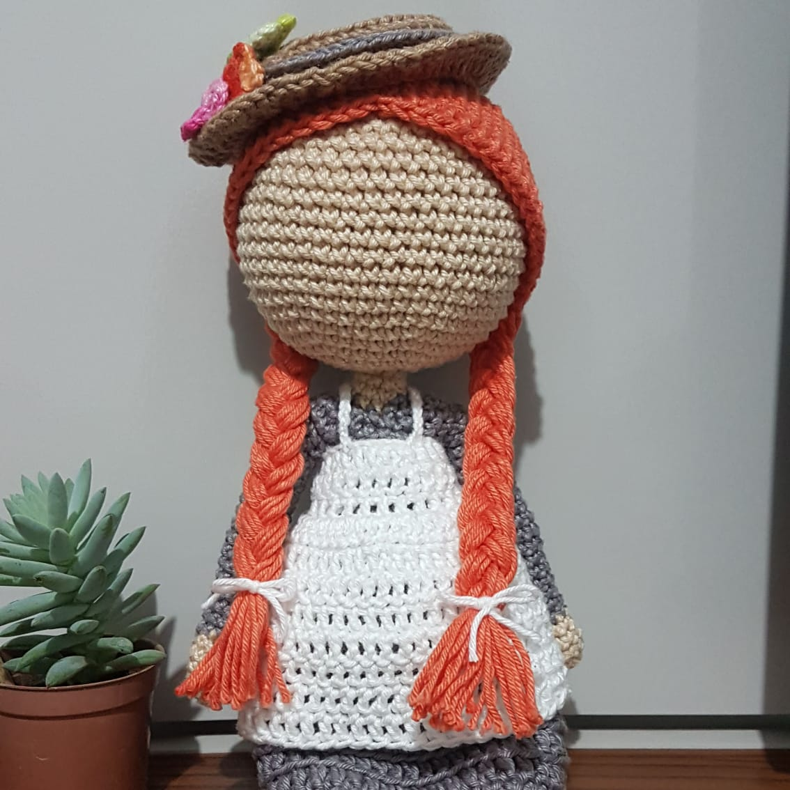
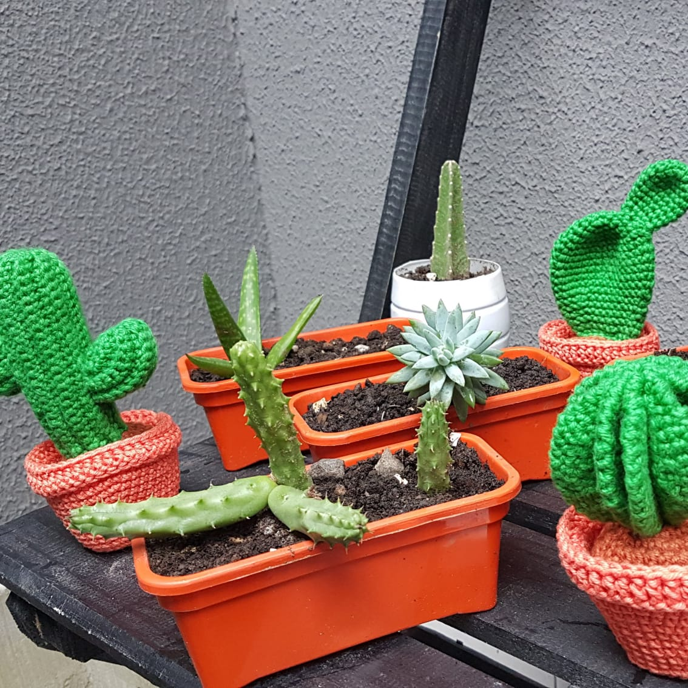
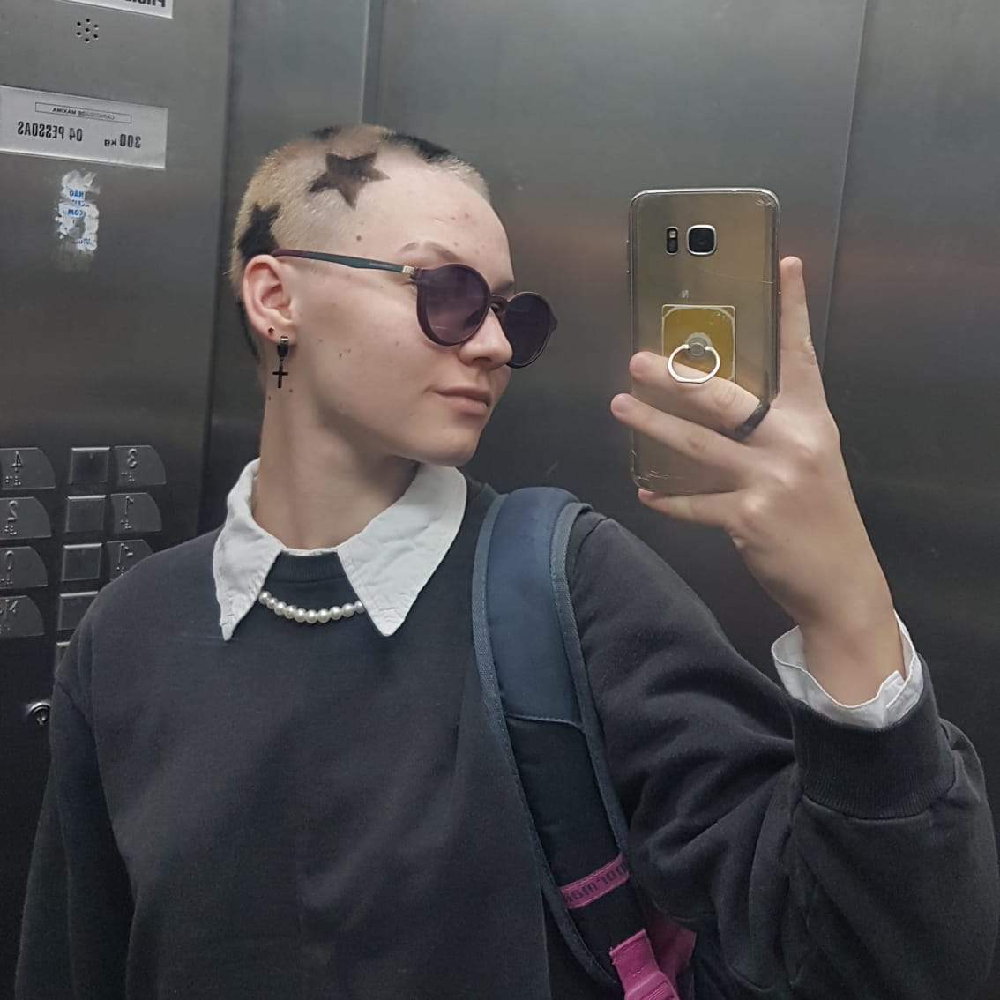

Quem é Isabella Vicente?
Hey, meu nome é Isabella Vicente e sou uma dev em formação, que sonha com uma carreira criativa e livre. Atualmente, curso Matemática Industrial na UFPR e os Códigos do Amanhã da Resilia com Ebanx.
Sou de Matinhos-PR e estou em busca do meus sonhos, quero terminar a faculdade, me tornar uma dev de sucesso, desenvolver algo legal que ajude as pessoas e poder trabalhar viajando no meu motorhome!
Adoro aprender e entendo que não sei todo o conhecimento do mundo, gosto de programação por ser volátil e estar em constante evolução.
Como nem tudo são flores, eu tenho defeitos e o meu principal é a ansiedade e o medo. Porém, entendo que são coisas que consigo mudar, entender e aprender com elas. Faço terapia para lidar melhor com essas questões e tem me ajudado muito.

Meus hobbies e interesses
  Tenho muitos hobbies, mas gosto mais desses três principais:
Crochê: faço crochê desde os meus 8 anos, tenho aproximadamente 11 anos de experiência e ainda não sei tudo. Assim como a programação, é uma área que precisa de muito estudo e treino, está sempre se atualizando e em constante mudança.
Meus Cactos: tenho muitas plantas, desde temperos à flores, mas meus cactos com certeza são meus amores. Gosto de ver crescer e me ajuda a aprender a ter paciência, eles podem até ter espinhos, mas também merecem amor.
Cabelo: meu cabelo é a minha arte, é onde eu me expresso a cada período, faz parte de quem eu sou. Já tive cabelos enormes e de diversas cores, no momento estou curtindo muito minha careca com desenhos, pra mim representa renovação (pra combinar com essa nova jornada de aprendizados e dev que estou entrando).